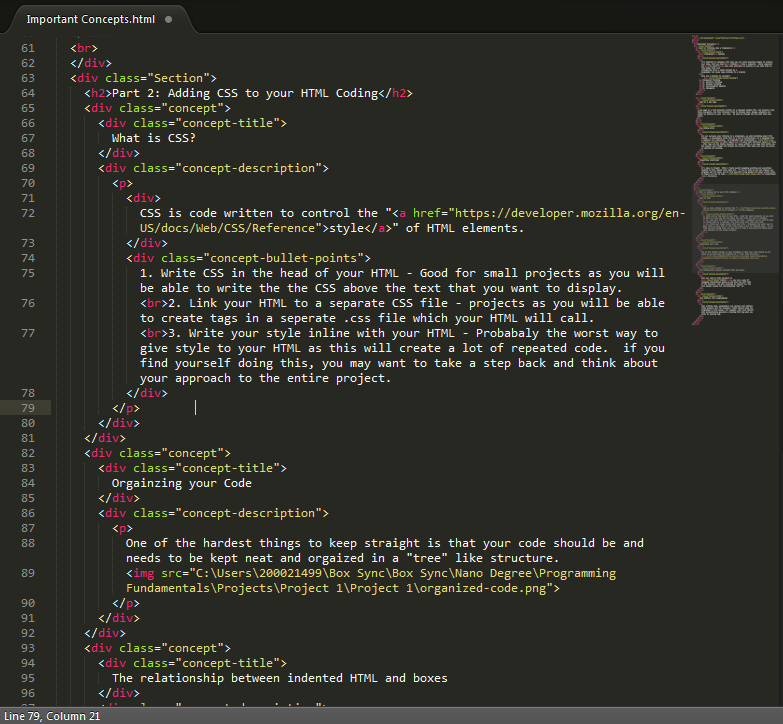

It's important to remember that when you are in teh planning stages of writing your code, that you need to think like a computer. Since computers are "so smart", they will literally do exactly as you tell them to. This makes them very unforgiving since a small mistake by a programmer can cause huge problems in a program.
A web page is a text document written in a language called HTML. Web browsers read these documents, and then interpret them to display text, images, graphics and videos as defined in your .css file. We will go through CSS and what that does later.
For our purposes when refering to a programmer, we will be talking about HTML coding. A programmers write text or a set of instructions, in a language that a computer can understand. HTML Tags are the hidden keywords or values within a web page that define how the browser must format and display the content. Most tags must have two parts, an opening "< >" and closing "</ >".
It's okay to forget! Often I found myself googling anything and everythign related to HTML coding (and still do). If you're like me and not someone who programs all the time, you'll find yourself using google and other useful sites to figure out how to code something correctly.
One of the hardest things to keep straight is that your code should be and needs to be kept neat and orgaized in a "tree" like structure. The image below is an example of the code used to write this section of the page. The program used to write that is Sublime Test 2.
